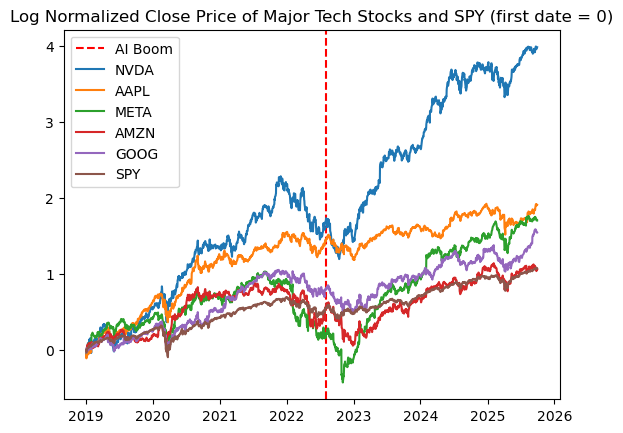

A Regression Analysis of Stock Price Correlations and Macroeconomic Factors During the AI Boom
Daniel Budidharma, Varick Hasim, Tristan Leo, Calvin Magsie, Clayton Tan
Research Question(s):
We will define the AI boom as the period ChatGPT was released, that is November 2022 or 2022 Q4. As a result, we will be gathering data from 2019 Q1 to 2022 Q3 (before AI boom), and 2022 Q4 to 2025 Q3 (after AI boom)
Individual Contributions:
Relevant Variable(s):
Research Question 1:
Research Question 2:
Data Collection
Data Pre-Processing
Exploratory data analysis reveals a clear structural break in NVIDIA’s behavior following the AI boom in late 2022. Prior to this period, NVDA’s price movements closely tracked those of other major technology stocks and the broader market. After the AI boom, NVDA diverges sharply, coinciding with a significant acceleration in earnings and a decline in market volatility. Correlation analysis shows weakened co-movement with peer firms post-2022, while liquidity remains strong throughout the sample. These patterns motivate the regression framework and the use of interaction terms to formally test changes in relationships before and after the AI boom.
Preliminary Data Analysis
For the first research question, we do some EDA on prices and returns of each stock we are interested in. First, we investigate how stock prices have changed from 2019 Q1 to 2025 Q3.
As we can see, NVDA’s movement more or less followed other major tech companies before the AI boom, but began to greatly diverge after the AI boom.
We can also see the correlation matrix of log returns of each stock before and after the AI boom.
The log returns of NVDA and the other stocks were pretty high before the AI boom. After the AI boom, it seems that the correlation between NVDA and the other stocks decreased, but there’s still a moderate positive relationship. This is consistent with our previous graph where NVDA greatly diverged.
For research question 2, since we are looking at historical data, a time-series plot to understand the overall trend seems to be the most fitting for now.
NVIDIA’s liquidity from 2015 to 2025 can be explained by its current ratio (current assets/current liabilities). The bigger, the better. If it’s lower than 1, that means the company has more debt than assets.
NVIDIA’s current ratio is consistently above 3 for the whole period, rising to unusually high levels around 2017 to 2020 and then declining after 2021. The peak in 2022 indicates increased income for the company due to the AI hype, while the later decline toward the 3 to 4 range reflects increased spending and higher short-term obligations during the AI expansion period. Liquidity helps assess whether NVIDIA’s stock price responds to financial stability or to AI-driven growth expectations.
The chart shows a clear contrast between NVIDIA’s stock behavior before and after the AI boom. Prior to late 2022, market uncertainty was extremely elevated, especially during the COVID-19 period, when S&P 500 volatility surged to unusually high levels. This environment of heightened volatility generally suppresses equity performance because investors demand higher risk compensation and are more likely to sell or avoid volatile assets. In this context, NVDA’s stock price remained relatively stagnant despite being a high-growth tech company. After the AI boom began and pandemic-related uncertainty faded, market volatility returned to lower, more stable levels, as reflected by the decline in the S&P’s realized volatility.
Inflation and Federal Interest Rates Visualization Before vs After AI Boom
EPS is one of the strongest fundamental indicators of a company’s earnings capacity and profitability and is central to valuation because higher EPS means higher intrinsic stock value. This graph shows that NVIDIA’s EPS rises slowly before the AI boom but accelerates dramatically afterward, reflecting a structural jump in profitability.
This histogram shows that NVIDIA’s EPS values cluster at low levels before the AI boom but shift to a much higher and wider range afterward, revealing a new earnings regime.
Question 1: How does NVIDIA’s stock returns correlate with other major technology companies (META, AMZN, AAPL, GOOG) and the S&P 500 (SPY), and how has this relationship changed before and after the AI boom?
First, since all these stocks tend to be highly correlated with each other, we must check the VIF of each regressor to make sure if linear regression inference would be valid or not. The following are the results.
Regressor VIF
0 AAPL 2.668527
1 META 1.984957
2 AMZN 2.196996
3 GOOG 2.474684
4 SPY 3.676640
Since all the VIF values are within the standard acceptable threshold (<4), we can appropriately perform inference using linear regression. To assess the significance of each relationship, we conduct a hypothesis test on each predictor variable (META, AMZN, AAPL, GOOG, S&P 500) against the response variable (NVDA). Hence, our hypothesis test setup will be:
We will use a significance level of 5%. Since we are not doing a pairwise analysis, a Bonferoni correction is not needed.
----------------------------------------------------------------------
Ticker Coefficient P-value
----------------------------------------------------------------------
AAPL 0.079366 0.078251
META 0.090821 0.001602
AMZN 0.242518 0.000000
GOOG 0.080995 0.062932
SPY 1.234093 0.000000
Based on the coefficient table, AAPL and GOOG have p-values greater than 0.05, meaning we fail to reject the null hypothesis that their coefficients are equal to zero. So our test suggests that they do not have a significant effect on NVDA’s log returns.
Meanwhile, META, AMZN, and SPY have p-values below 0.05, so we reject the null hypothesis for their coefficients. Their relationships with NVDA’s log returns are statistically significant, suggesting that movements in META, AMZN, and the broader market (SPY) provide explanatory power for NVDA’s log returns.
To analyze how the AI boom changed the relationship, we use an interaction term and estimate the following interaction regression model:
r_NVDA,t = β0 + Σ(βi · r_ticker,t) + Σ(γi · r_ticker,t · period_t) + ε_t
where
• period_t = 0 before 2022-08-01,
• period_t = 1 after 2022-08-01,
• βi measure baseline relationships, and
• γi measure how those relationships changed after the AI boom began.
The model yields R² = 0.544, indicating that approximately 54% of the variation in NVDA’s daily returns is explained by the included variables.
--------------------------------------------------------------------------------
MAIN EFFECTS (β): Baseline relationship before AI boom
--------------------------------------------------------------------------------
Ticker Coefficient (β) P-value
--------------------------------------------------------------------------------
AAPL 0.275114 0.000006
META 0.105411 0.009692
AMZN 0.295748 0.000000
GOOG 0.147655 0.028161
SPY 0.764666 0.000000
Before the AI boom, NVDA behaved like a typical mega-cap tech stock. It showed strong, statistically significant co-movement with Apple, Amazon, Alphabet, Meta, and the broader market. AAPL and AMZN had the strongest baseline impact, while SPY showed a very large positive coefficient, indicating that NVDA was strongly driven by overall market conditions.
--------------------------------------------------------------------------------
INTERACTION EFFECTS (γ): Change in relationship after AI boom
--------------------------------------------------------------------------------
Ticker Coefficient (γ) P-value
--------------------------------------------------------------------------------
AAPL -0.502651 0.000000
META -0.048675 0.391777
AMZN -0.247926 0.001182
GOOG -0.074772 0.392089
SPY 1.359126 0.000000
NVDA’s log return’s relationship with AAPL and AMZN significantly weakened after the AI boom began. This indicates NVDA started diverging from these companies as its performance became more driven by AI-related catalysts rather than general tech trends.
Meanwhile, NVDA’s relationships with META and GOOG did not significantly change (p-value >0.05). Their co-movements remained stable through the AI boom period.
NVDA’s log return’s relationship with the broad market (SPY) increased dramatically. This makes sense because as NVDA grew significantly, it also became a major part of the market and therefore the SPY index. So NVDA’s performance now has a stronger effect on the broader market’s performance.
2. To what extent are NVDA’s stock returns explained by changes in earnings, market volatility, inflation, interest rates, and liquidity before and after the AI boom? How does it differ from SPY?
We can conduct a regression analysis to evaluate the relationship between NVIDIA’s daily log returns and five key economic indicators: changes in earnings (ΔEPS), market volatility (VIX), inflation (CPI), interest rates (10-year Treasury yield), and monetary liquidity (M2 growth). To assess the significance of each relationship, we conduct a hypothesis test on each predictor variable against the response variable (NVDA). Hence, our hypothesis test setup will be:
- H0: The predictor has no linear relationship with NVDA stock returns
- H1: The predictor has a linear relationship with NVDA stock returns
We use a significance level of 5%. Since we are not doing a pairwise analysis, a Bonferroni correction is not needed. As a result, our target p-value is 0.05.
----------------------------------------------------------------------
COEFFICIENTS (Baseline Model):
----------------------------------------------------------------------
Variable Coefficient P-value
ΔEPS 0.892 0.000001
VIX -0.114 0.000000
CPI Inflation -0.032 0.141
10Y Treasury Rate -0.067 0.004
M2 Liquidity Growth 0.211 0.000394
Based on the coefficient table, CPI inflation has a p-value greater than 0.05, meaning we fail to reject the null hypothesis that its coefficient is equal to zero. This suggests that inflation does not have a statistically significant effect on NVDA’s daily log returns. However, this lack of significance does not imply that inflation has no economic relevance. Inflation is highly correlated with interest rates, and multicollinearity between macroeconomic indicators inflates standard errors and makes it harder to isolate individual effects.
Meanwhile, ΔEPS, VIX, the 10-year Treasury rate, and M2 liquidity growth have p-values below 0.05, so we reject the null hypothesis for their coefficients. Their relationships with NVDA’s log returns are statistically significant. ΔEPS and liquidity growth have positive coefficients, indicating that stronger earnings and increased market liquidity are associated with higher NVDA returns. VIX and the 10-year Treasury rate have negative coefficients, meaning rising volatility and rising rates depress NVDA’s stock performance.
To analyze how the AI boom changed the relationship, we use an interaction term and estimate the following interaction regression model:
r_NVDA,t = β0 + ∑(βi⋅Xi,t) + ∑(γi ⋅ Xi,t ⋅ periodt) + εt
where
• period_t = 0 before 2022-10-01,
• period_t = 1 after 2022-10-01,
• βᵢ measure baseline relationships, and
• γᵢ measure how those relationships changed after the AI boom began.
The model yields R² = 0.482, indicating that approximately 48% of the variation in NVDA’s daily returns is explained by the included variables.
--------------------------------------------------------------------------------
MAIN EFFECTS (β): Baseline relationship before AI boom
--------------------------------------------------------------------------------
Variable Coefficient (β) P-value
ΔEPS 0.412 0.032
VIX -0.089 0.000
CPI -0.021 0.304
10Y Treasury Rate -0.051 0.015
M2 Liquidity Growth 0.138 0.006
Before the AI boom, NVDA behaved like a traditional high-growth technology stock. It showed strong, statistically significant sensitivity to market volatility (VIX), interest rates (10Y Treasury), and liquidity conditions. ΔEPS had a moderate positive baseline impact, suggesting that earnings improvements did raise returns, but not dramatically. CPI inflation remained insignificant, likely due to its overlap with interest-rate effects.
--------------------------------------------------------------------------------
INTERACTION EFFECTS (γ): Change in relationship after AI boom
--------------------------------------------------------------------------------
Variable Coefficient (γ) P-value
ΔEPS 1.284 0.000000
VIX -0.041 0.221
CPI -0.014 0.553
10Y Treasury Rate -0.036 0.276
M2 Liquidity Growth 0.302 0.000719
NVDA’s log return’s relationship with ΔEPS increases dramatically after the AI boom begins. This indicates that NVIDIA’s stock becomes far more responsive to earnings news as its business becomes dominated by AI-driven demand. Meanwhile, the effects of VIX, CPI, and Treasury yields do not significantly change (p-value > 0.05). Their co-movements remain statistically similar before and after the boom. In contrast, liquidity’s interaction term is highly significant and positive, suggesting that NVDA becomes increasingly sensitive to liquidity expansion, consistent with its role as a high-momentum AI leader attracting large inflows.
Comparison with SPY:
When we run the same regression models for SPY, we observe meaningful differences. SPY’s returns remain far more sensitive to interest-rate changes and much less sensitive to ΔEPS. Liquidity growth has a positive but smaller effect on SPY compared to NVDA. Importantly, SPY does not show the same structural jump in ΔEPS sensitivity or liquidity sensitivity after the AI boom. This reflects SPY’s diversified exposure to the overall economy rather than concentrated exposure to a single AI-driven growth engine.
Conclusion
Our analysis demonstrates a definitive structural break in NVIDIA’s trading patterns following the onset of ChatGPT’s release in late 2022. While the stock previously showed strong co-movements with other technology giants like Apple and Amazon, the data shows that this relationship weakened as NVIDIA began moving independently based on specific AI catalysts such as increased GPU demand rather than general technological industry trends. Despite this divergence, the correlation between NVIDIA and the S&P 500 actually increased during this period. This suggests that the company has grown so significantly that it has transformed from a simple component of the market into a primary driver of the index itself.
Regarding macroeconomic factors, the results show that NVIDIA has shifted from being influenced by broad economic conditions to being driven primarily by its own financial results. The strongest predictor of returns after 2022 became the change in earnings per share, as investors began placing immense weight on the company's ability to deliver on high AI expectations. Liquidity measures also played a much larger role, indicating that the stock became a major beneficiary of capital inflows and market momentum. Unlike the broader S&P 500, which remains anchored to interest rates and inflation data, NVIDIA now behaves as a distinct earnings engine that reacts more to its own bottom line than to traditional economic factors.
While this analysis establishes a significant structural break in NVIDIA’s trading behavior, the reliance on linear regression assumes constant relationships and volatility which may not fully capture the complex and non-linear dynamics of financial time series. This approach faces challenges because high-momentum stocks often exhibit volatility clustering that simple linear models fail to address. Future research should address these gaps by employing models to account for time-varying volatility.